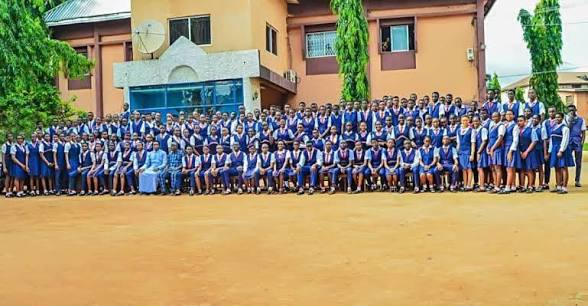
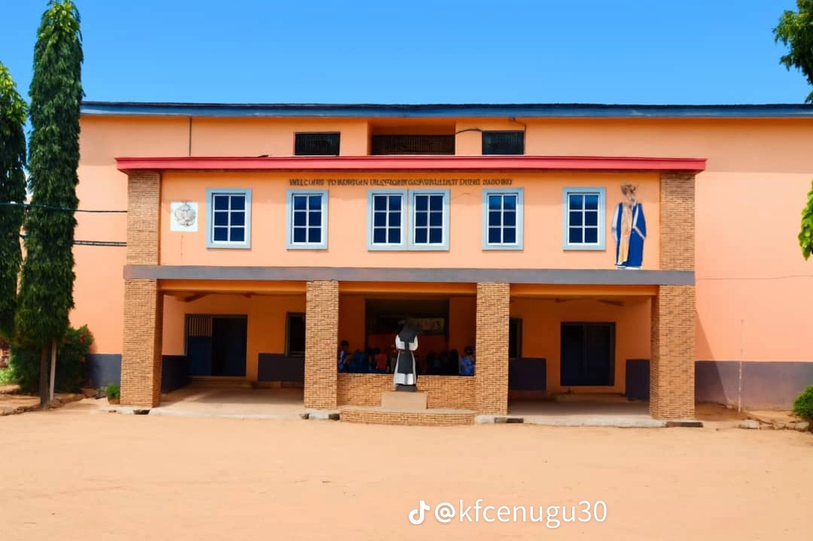

01
Academic Excellence
Encouraging curiosity, consistent learning, and the pursuit of knowledge.
COLLEGE, ENUGU
WELCOME TO OUR SCHOOL
Welcome to Königin des Friedens College, Enugu, a school community focused on learning, character development, and preparing students for the future.


GET TO KNOW US
Education is an important foundation for personal development and a successful future. At Königin des Friedens College, Enugu, our school community celebrates learning, responsibility, and the development of each student's potential.
We believe students should be encouraged to develop their knowledge, discover their abilities, and cultivate values that help them contribute positively to their communities.
Discover Our Values →WHAT GUIDES US
The principles that shape our educational vision and school community.
Encouraging curiosity, consistent learning, and the pursuit of knowledge.
Promoting responsibility, mutual respect, and positive conduct.
Supporting students as they develop confidence, skills, and their individual abilities.
A GLIMPSE OF OUR SCHOOL
Explore photographs showcasing our school community and environment.
CONNECT WITH US
For admissions, school enquiries, and further information, please contact the school through its official communication channels.
Official contact details can be added here once they have been confirmed.